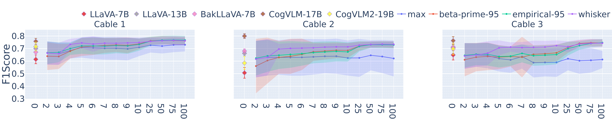
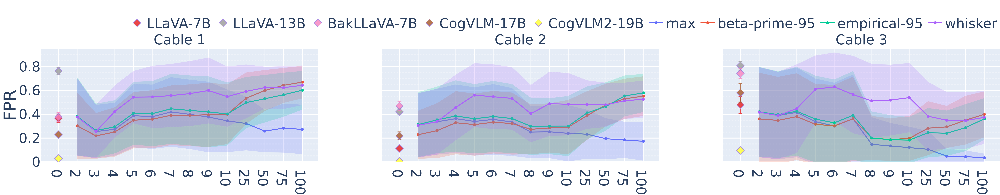
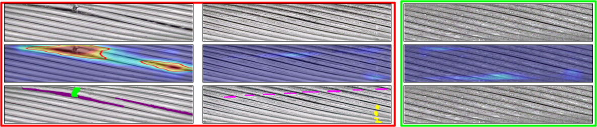

To address the challenges of collecting diverse anomalous and nominal examples for setting a detection threshold, we introduce Enhanced-PatchCore an improved approach to PatchCore that sets thresholds using only a training set with a few nominal images. We define a comprehensive evaluation protocol based on cross-validation and evaluate Enhanced-PatchCore for few-shot and many-shot detection. To further eliminate the need for a train set, we seek to use open-source conversational Vision-Language Models (LLaVA, BakLLaVA and CogVLM) and WinCLIP in zero-shot setting. Our findings indicate that the baselines show promising results in detecting anomalies on the cables. However, they struggle with certain types and grades of anomalies, highlighting the need for further research in real-world industrial contexts. By introducing CableInspect-AD, we aim to push the frontiers of VAD and demonstrate its potential to generalize to complex, real-world domains.


The figure above shows the image level F1-Score and FPR of the VLMs and Enhanced-PatchCore with different thresholding strategies on our dataset. First, we can observe that CogVLM-17B has the best F1 Score, whereas CogVLM2-19B has the lowest FPR. Enhanced-PatchCore has a better F1 score than all VLMs except CogVLM-17B. There are large variations across VLMs, indicating the need for careful selection. Enhanced-PatchCore, even with limited nominal images, maintains competitiveness while offering the added advantage of pixel-level evaluation.

Enhanced-Patchcore outperforms WinCLIP in the segmentation task on our cropped dataset (background removed), with an AUPRO of 0.53 ± 0.08 compared to 0.27 ± 0.06 for WinCLIP. The figure above displays example outputs from Enhanced-Patchcore, illustrating that the model effectively identifies larger anomalies but struggles with subtler ones. The rightmost image is nominal (green); the rest show anomalies (red). The images (top) and pixel-level prediction heatmap (middle) are shown against ground truth masks (bottom) from different cables. The bottom row shows the segmentation masks coloured based on the anomaly type. Some anomalies are easily detected (left) whereas the others are difficult and are missed (middle). The rightmost image shows a nominal image where texture changes from wear are visible. These texture variations can distract the model, adding complexity to the task.
We find that, in general, the baselines show promising results in detecting anomalies on the cables, but struggle to detect anomalies of certain types and grades. All in all, this use case presents an important challenge for the development of new models that perform well on this task. The dataset is available in the public domain under a Creative Commons Attribution-NonCommercial-ShareAlike 4.0 International License.
For more information, please refer to the datasheet provided in the paper. The dataset downloaded using this link includes images and annotation files in COCO format. We provide detailed explanations and scripts to generate labels and masks, along with instructions on how to read the dataset and code to reproduce the results in the code repository.